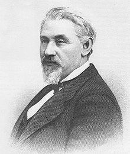

Seligman was born in Baiersdorf, Germany. As a small child, he worked in his mother's dry goods shop. Present-day Germany consisted of many independent states in the early 19th century, most of which issued their own, differing coinages; and young Joseph made a profit at his mother's store changing money for travelers for a small fee. Joseph's father wanted him to enter the family wool business, but circumstances made this difficult; in particular, migration of the peasant class (Seligman's father's customers) from rural areas to urban meant a loss of job opportunities and a shrinking economic base in Baiersdorf. At fourteen, Seligman attended the University of Erlangen. At seventeen, he boarded a steamer at Bremen and sailed to America.
Arriving in the United States at age 18, Seligman initially settled in Mauch Chunk, Pennsylvania, where he went to work as a cashier/clerk for Asa Packer, who later become a United States congressman. His salary was $400 a year. Using his savings from work, Seligman began selling goods door to door in rural Pennsylvania (jewelry, knives, smaller goods), saving outlying farmers the trouble of coming into town to buy their goods. After saving $500, Seligman was able to send to Germany for his brothers William and James, who joined him in peddling.
The Seligmans encountered some antisemitic abuse in their interactions with Americans, though they were not discouraged from continuing to sell.
Joseph Seligman and his brothers owned and operated several stores in Alabama, but they became uncomfortable with the institution of slavery in the South. Additionally, the rest of the family had emigrated to New York, leading the brothers to move north and establish J. Seligman and Brothers. Jesse Seligman ran the store's branch in San Francisco, while Joseph managed the New York City store. Despite the economic booms and busts of the 1850s and 1860s, J. Seligman and Brothers remained prosperous.
During the American Civil War, Seligman was responsible for aiding the Union by disposing of $200,000,000 in bonds "a feat which W. E. Dodd said was 'scarcely less important than the Battle of Gettysburg'".
Later historians have suggested that Seligman's role in financing the war through bonds has been exaggerated. According to Stephen Birmingham, Seligman was obliged to accept "7.30 bonds" from the government as payment for the uniforms his factory was delivering. Union defeats, combined with a suspiciously high interest rate, lowered confidence in the bonds, making them difficult to sell.
In the post-Civil War Gilded Age, J. & W. Seligman & Co. invested heavily in railroad finance, in particular acting as broker of transactions engineered by Jay Gould. They underwrote the securities of a variety of companies, participating in stock and bond issues in the railroad and steel and wire industries, investments in Russia and Peru, the formation of the Standard Oil Company, and shipbuilding, bridges, bicycles, mining, and a variety of other industries. Later, in 1876, the Seligmans joined forces with the Vanderbilt family to create public utilities in New York.In 1877, Seligman was involved in the most publicized antisemitic incident in American history up to that point, being denied entry into the Grand Union Hotel in Saratoga Springs, New York by Henry Hilton.
Seligman's firm made a number of investments in railroads. Among these were the Missouri Pacific, the Atlantic and Pacific Railroad (A&P), the South Pacific Coast Railroad, and the Missouri–Kansas–Texas Railroad. They also helped finance New York's first elevated railway.
After the American Civil War, nothing generated as much financial excitement as rail transportation, and the Seligmans were, at that time, the country's leading financiers. Joseph started conservatively in this sector, selling railroad bonds, but this led them to owning and operating railroads in order to protect their investments. Joseph served as director of the A&P, the Missouri–Kansas–Texas, as well as the South Pacific railroads, and in 1872, claimed that they had made a fortune in the business of start-up railroads. However, he never felt comfortable here, and suspected that they were over-invested in the sector. After the Panic of 1873 he swore never to sell another railroad bond, but in 1874 was again selling A&P bonds, touted as the only snow-free route to the Pacific. In 1875 the A&P failed, and its franchise was taken over by the St. Louis–San Francisco Railway, which was forced to sell half its A&P interest to the Atchison, Topeka and Santa Fe Railway (AT&SF). Joseph unfortunately died, five years before being able to see the AT&SF reach Los Angeles.
The Seligmans tended to generally lose money on their railroad ventures. An example is the purchase of land in Arizona to be used for grazing cattle, which would then be transported to market on the A&P. The aridity of the desert made it unsuitable for the venture, but there remains a town by the name of Seligman, Arizona.